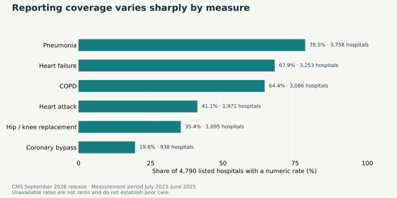

← Back to selected work
Health systems · CMS public data · Quality review
Hospital Readmission & Quality Risk Intelligence
Which published hospital rates deserve a closer look—and where is the evidence incomplete? A reproducible review workspace combining national benchmarks, reporting coverage and hospital-specific briefings.
The management question
A benchmark gap starts a question. It does not answer it.
A quality team needs more than a league table. It needs the right measure, a matching period, a traceable hospital identity and a clear view of missing evidence. This project turns public reporting into an investigation workflow rather than a verdict.
The CMS September 2026 hospital-visits release provides six condition/procedure readmission measures covering July 2023–June 2025. National benchmarks are joined on the exact measure and both period dates. Hospital characteristics come from the August 2026 information release.
The evidence constraint
Reporting coverage changes what you can compare.

Pneumonia has numeric rates for 3,758 listed hospitals; coronary bypass has rates for 938. This difference does not establish a quality gap. Service availability, eligibility, volume and source suppression rules all matter. Unavailable records stay visible with their original footnote codes.
The analytical product
From a public extract to a usable quality-review workspace.
Performance overview: filter by condition, location and ownership; inspect rate distributions and denominator-versus-gap plots; use an optional volume screen without changing the coverage denominator or the national reference.
Hospital briefing: inspect all six measures for one hospital, compare point estimates to their national references and download a concise evidence briefing.
Review list: choose the minimum point gap and reported denominator, then export the hospitals meeting those settings. A sensitivity report makes threshold dependence visible.
Audit trail: preserve source values, missingness, facility IDs, measurement windows, SQL queries, snapshot URLs and checksums.
A transparent investigation screen
1,952 observations. 1,250 distinct hospitals. A list to inspect.
A point gap of at least one percentage point above the national reference and a reported denominator of at least 100 selects 1,952 hospital-measure observations at 1,250 distinct hospitals. A hospital may appear for more than one condition.
These are user-selected review settings, not statistical or clinical significance thresholds. The counts do not represent avoidable admissions, intervention effects or financial savings. A local team still needs process, case-mix and data-quality evidence before acting.
Scope and analytical judgment
Useful evidence, with its uncertainty intact.
All six included measures lack published comparison intervals and CMS comparison categories in this snapshot. The app therefore labels only point-estimate gaps and does not invent binomial confidence limits for standardized rates.
Hospital means and medians describe reporting hospitals, not patient populations. Condition denominators overlap and are not summed. Overall star ratings are excluded from predictive features. This is one release, not a trend study or patient-level prediction model; U.S. results do not establish Nigerian performance.
Reproducibility
The evidence can be followed back to its source.
The pipeline validates unique hospital-measure-period keys, six-character facility IDs, many-to-one joins and exact-period national references. Executed SQLite reports reconcile to the committed processed data. Application tests cover filters, unavailable results and hospital selection.
Sources: CMS hospital visits, national benchmarks, hospital information and the official data dictionary. No synthetic analysis data or personal medical records are used.
Inspect and reproduce
Quality intelligence that shows its workings.
Explore the application source, SQL pipeline, complete processed snapshot, findings, review-screen sensitivity and evidence tests.